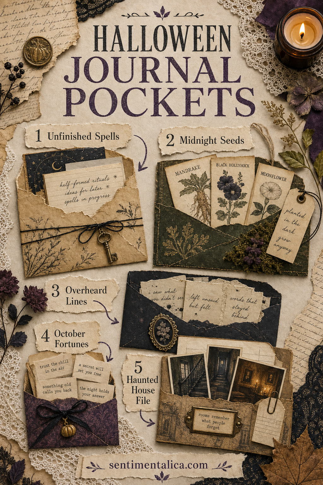
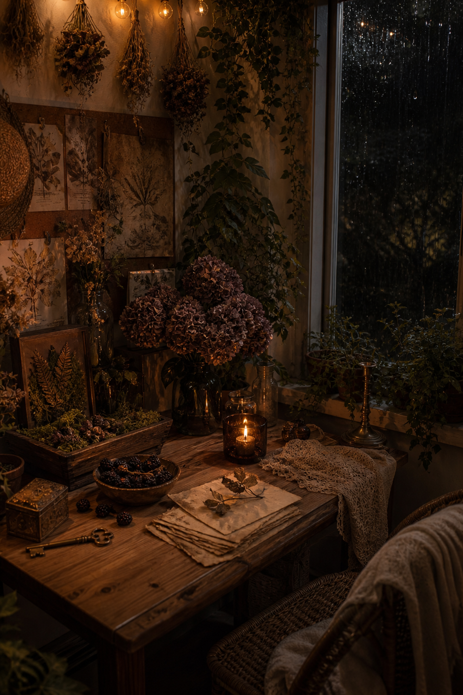

Halloween pages become especially inviting when they hold something you cannot see at first glance. A folded note, a tiny botanical label, or the beginning of a strange story gives the reader a reason to slow down and look inside.
You can make every pocket in this guide from envelopes, book pages, paper bags, and ordinary scraps. The aim is not to fill the journal with bulky decoration. It is to create a few quiet hiding places that make the book feel secretive, tactile, and alive.

Begin with one simple pocket shape
Cut a rectangle slightly narrower than your journal page. Fold the bottom edge upward, crease the sides inward, and glue only those three folded edges. Tear or curve the open edge so the contents are easy to reach.
Before attaching it, test the pocket with two or three inserts. A pocket that looks beautifully full on the desk may become too thick once the journal closes. Leave a little room for paper to move.
1. A pocket of unfinished spells
Write poetic instructions rather than claims of real magic: “For remembering a dream,” “For a brave walk after dark,” or “For finding your way home.” Add a list of symbolic ingredients such as rosemary, rainwater, a brass key, and one red leaf.
Use narrow slips of cream paper and give each one a faded handwritten title. A touch of moss, plum, or amber watercolor will make the collection feel related without making it too bright.
2. A midnight seed library
Turn small folded packets into imaginary seed envelopes. Label them with names such as moon garden poppy, sleeping ivy, or October bell. Add planting dates, tiny botanical drawings, and a note about where each plant was supposedly found.
Mix one or two real autumn plant names into the collection. The contrast between fact and invention gives the page the feeling of an old naturalist’s archive.

3. A collection of overheard lines
Save mysterious fragments from books, films, conversations, or your imagination. Keep each line short enough to fit on a torn strip. “The upstairs window was open again” is more suggestive than a complete story.
Fold the strips once and place them inside a dark envelope. You can draw a small number on each one, then repeat those numbers faintly around the page as if the lines belong to a larger catalogue.
4. A pocket for October fortunes
Create gentle fortunes that feel encouraging rather than predictive. Try “A forgotten idea is ready to return,” “Follow the quieter path,” or “Something unfinished still has beauty.” Type them, stamp them, or write them on pieces cut from tea-stained paper.
This pocket can become a small seasonal ritual. Choose one slip when you sit down to journal and use it as the opening line for a page.
5. A tiny haunted-house file
Sketch a simple house, then make separate cards for its rooms. Give each room one object and one unanswered question: a stopped clock in the hall, pressed flowers in the kitchen, or a suitcase beneath the bed.
The cards do not need to form a finished story. Their purpose is to suggest that the journal belongs to a larger world. Add a floor-plan fragment or an envelope marked with the house number.
Keep the decoration quiet
Interactive pages already contain visual interest, so the background can remain simple. Use parchment, faded script, dark botanical fragments, and one repeated accent color. Leave enough plain paper around the pockets for fingers to reach the openings easily.
- Use tracing paper when you want a hidden layer to remain faintly visible.
- Add a fabric tab to any insert that is difficult to pull out.
- Round sharp card corners if they catch against the pocket.
- Keep heavy charms away from the fold of the journal.
- Test the closed book before gluing the final pocket.
A good hidden element does not merely occupy a pocket. It rewards the small act of opening it.
Choose one of these ideas for a single spread, or repeat the same pocket shape throughout a whole Halloween journal. Familiar construction will make the book feel connected while every secret inside can tell a different story.
For more mysterious and seasonal page ideas, continue through the Sentimentalica journal.